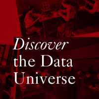

About
My Voyage to become a Data Analyst|Python Developer
-

2013-2017
My Humble Beginnings
I have opted for computer science during my plus two, made me to know more about computer and technology. So I went for the Bachelor's degree in Mahatma Gandhi University. The projects and freelance works during this period fuelled my desire to learn more about Big Data and Cloud.
-

August 2017
Started My Career
I have started my career as a Data Engineer in a startup - Leadferry Technolgies for 1.7 years. I had dealt with pyspark applications and Airflow scheduler. This job gave me a jumpstart to achieve more, so I decided to study further on Big Data and Cloud.
-

2019-2021
Transition to Post Graduate
My desire to learn the future of technology made me to pursue PGDA in Cloud Computing for Big Data. The excellent syllabus of the course and projects improved a drastic change to my knowledge. Moreover, the co-op as a part of the course curriculum paved me a way to gain knowledge
-
September 2020
Data Science Intern
The 4 months co-op contributed a huge part in building up my career. I have polished my skills in data science, ETL tools, yaml, docker etc. Furthermore, I'm looking forward to contribute an oraganization to fill the space with my skills.
-
Now, I Can
Be A Part Of
Your Story !